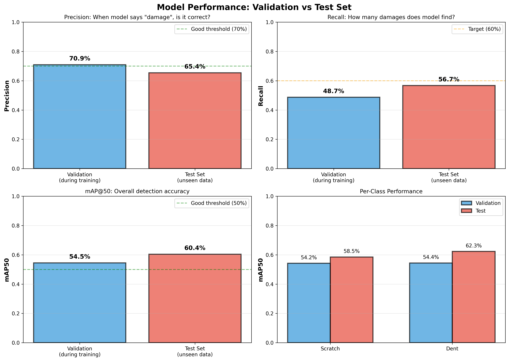
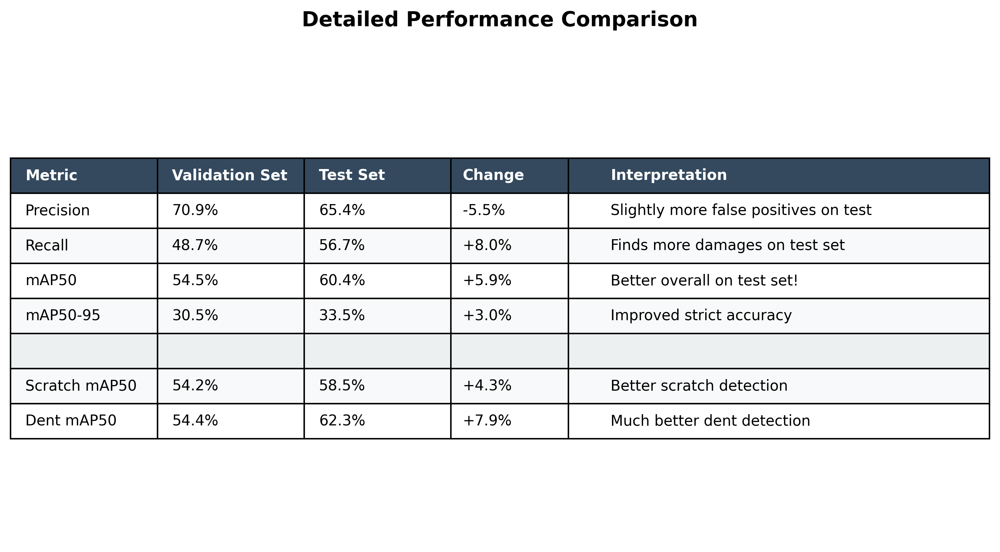
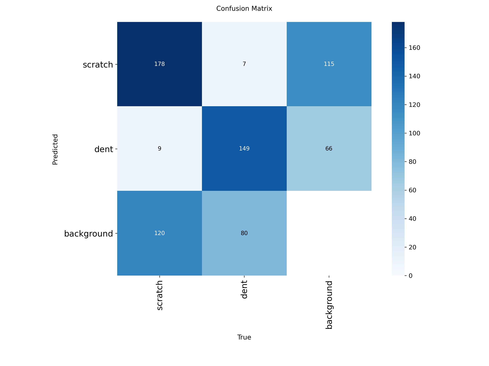
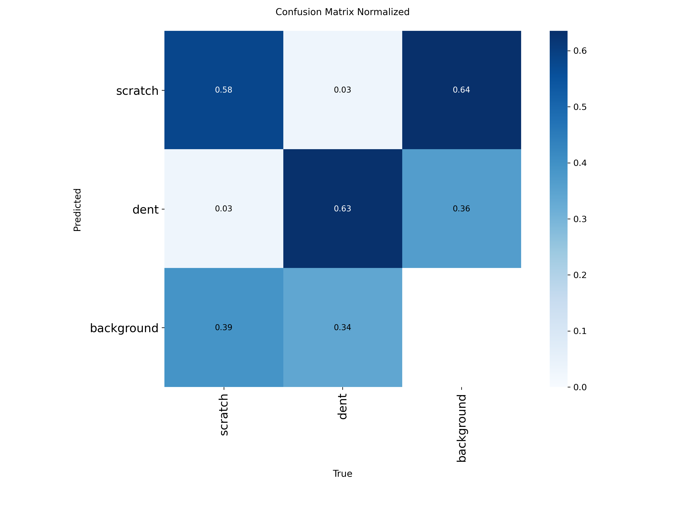
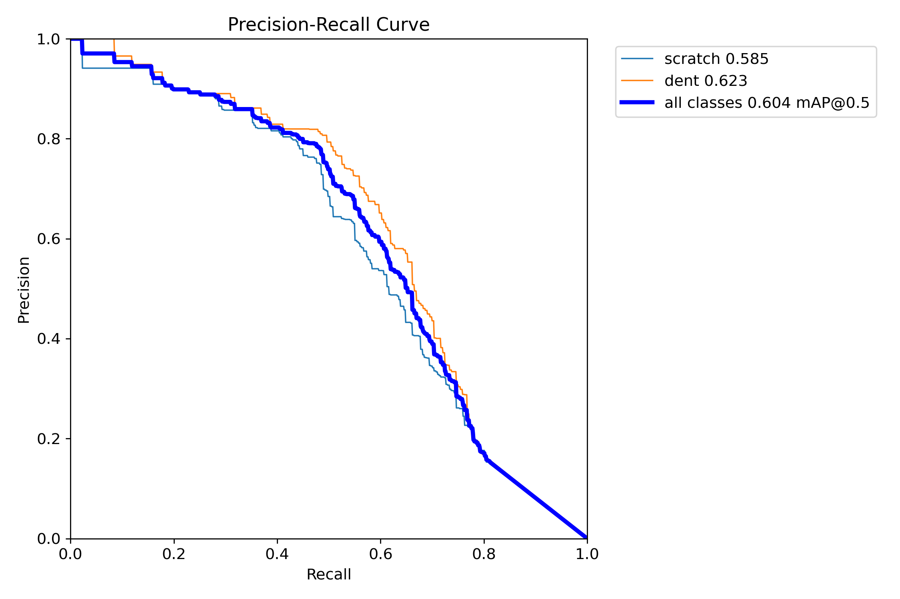
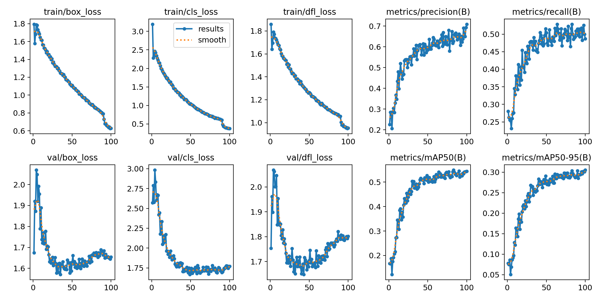
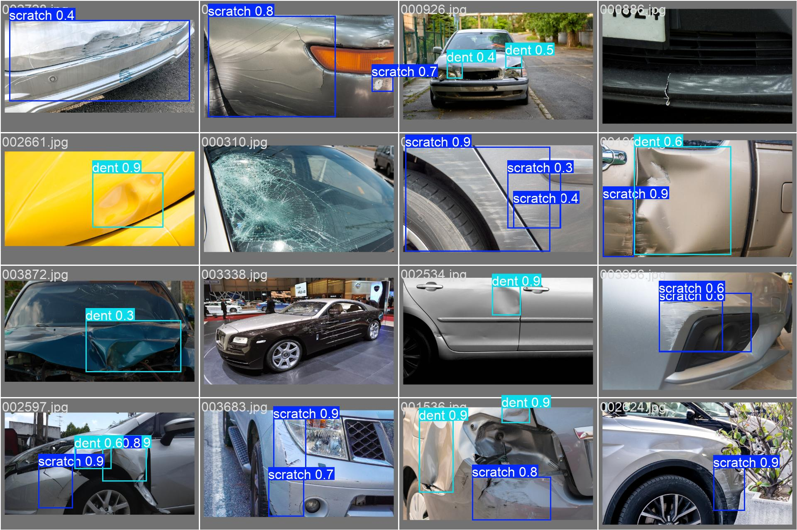
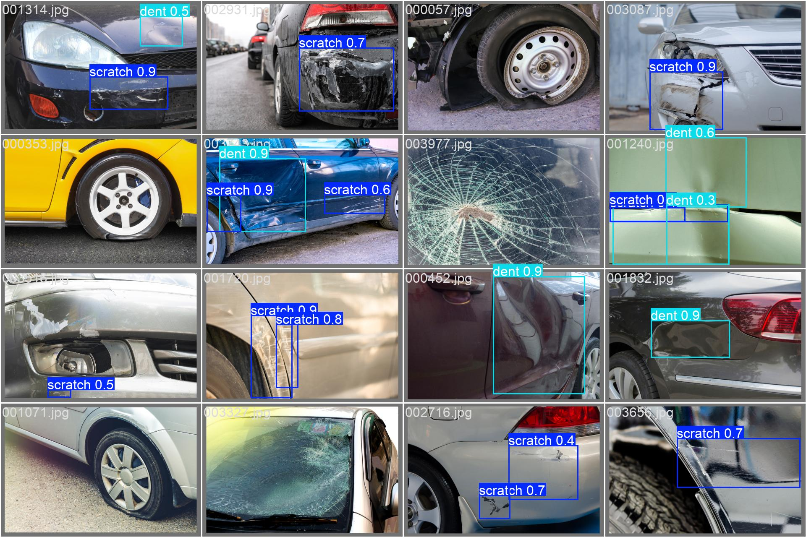

🎯 Sample Predictions vs Ground Truth
Legend: Blue/Cyan boxes = Ground truth | Yellow boxes = Model predictions

Legend: Blue/Cyan boxes = Ground truth | Yellow boxes = Model predictions





The Precision-Recall curve shows the trade-off between precision and recall at different confidence thresholds.

All losses decreased smoothly during training, indicating good convergence.


Model: YOLOv8s trained on CarDD dataset
Training: 100 epochs on NVIDIA RTX 3060 GPU
Dataset: 4,000 car damage images (scratches & dents)